本轮逐项梳理十五种风格，优先重做线条与科普两项，并各制作一个对象和情节不同的十秒故事。保留源库与本轮修改前的完整成片。这里没有自动艺术评分，也不把渲染成功当成作品达标。
展开工作台实际生成：八秒花园 / 六秒分光
在工作台切换故事方案、修改标题与时长后生成。这里验证配置能够进入成片；作品质量仍由上面的完整十秒影片判断。
十五项都有记录，尚未全部达标。
优先级是本项目对当前画面的编辑判断，依据最终影片取帧、前轮连续动作审查与源码调度；不是客观排名。两项本轮重做，其余十三项保留原版本，缺口继续公开。
REFINE / 精修 · FLAT-VECTOR扁平矢量
本轮开始时的具体缺口5.5–7.3秒倾注构图变化小，手指缺少持续压缩果瓣的细节；标题与配色可改，但新题材没有对应的动作资产。
值得保留整果、剖切、拆瓣和杯中液面已有连贯对象关系。
重做或验证方向补挤压、果皮回弹与流量的共同状态，再验证另一种食物制作故事。
观看时判断什么
去掉字幕仍能看懂手在挤什么；汁流的源与杯中增量对应。
展开源作与修改前的取帧依据
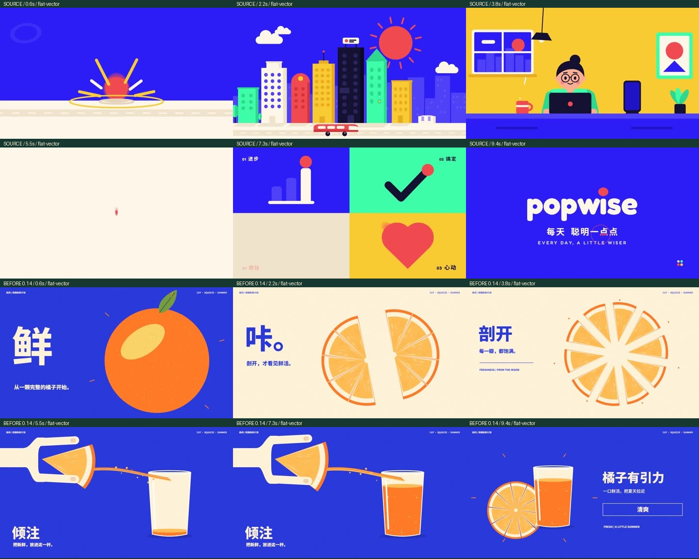
原创平面矢量程序插画，果瓣/汁流为设计编舞，不是切割或流体物理。保留柑橘原创题材，未复用源作品牌、角色或分镜。
PRIORITY / 优先 · LINE-ART线条动画
本轮开始时的具体缺口5.5–9.4秒主要停留在鲸与星图的同一构图，收束较弱；独立星图与鲸的动作连接不够有力。
值得保留弧长描线、笔尖和身体曲线可继续复用。
重做或验证方向本轮重做音乐会，并以浇水、生根、盛放的独立花园故事验证。
观看时判断什么
细节不得提前泄露；弓弦接触先于声线；花园先根后叶；结尾有由线到面的视觉变化。
展开源作与修改前的取帧依据
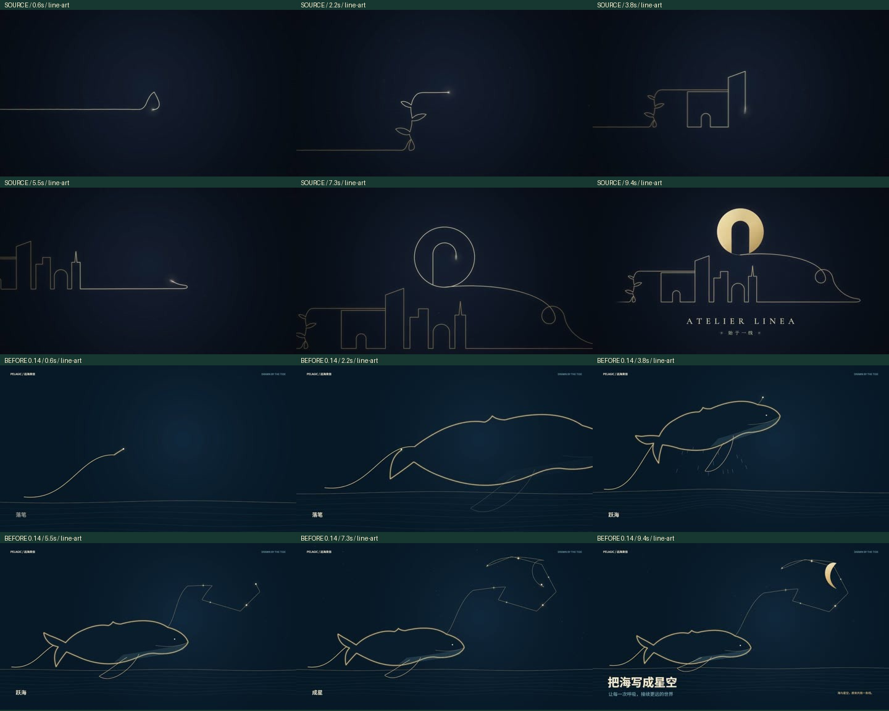
两套人工编排的原创线稿故事，可替换文字、配色与时长；不是任意文字自动生成线稿，也不保证所有线条属于同一条不中断路径。
REFINE / 精修 · ISOMETRIC等轴 2.5D
本轮开始时的具体缺口已有完整机器世界，但高潮仍依赖拉远揭示；各工位准备、接触、响应的时间关系值得继续精修。换故事仍沿用同一套机器。
值得保留真实正交模型、轨道、棚光与唱片揭示。
重做或验证方向用另一种生产流程建立独立工位，验证同一事件接口。
观看时判断什么
每个工位只在上一步作用后回应；镜头不遮挡关键接触。
展开源作与修改前的取帧依据
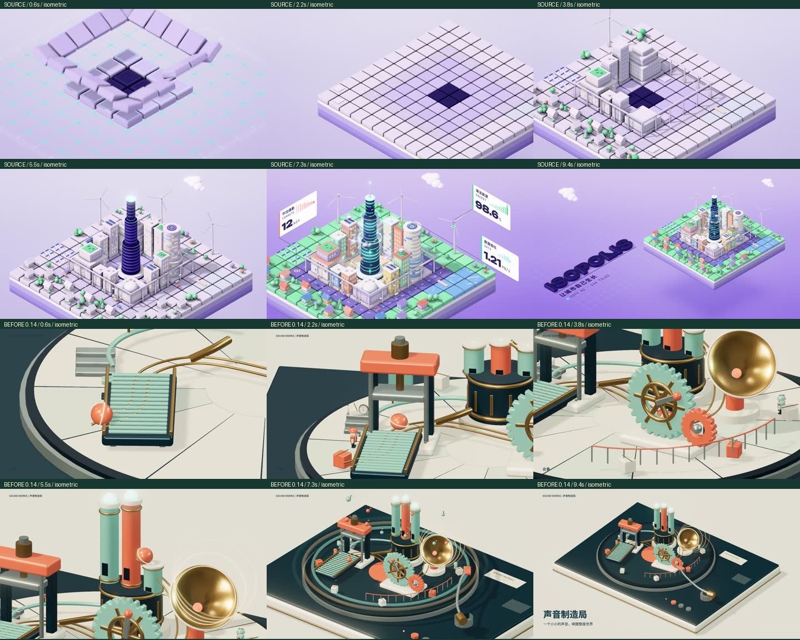
原创 Three.js 三维场景，正交相机、真实投影阴影、环境反射与 SSAA；轨道与机械为确定性编舞，不是工业力学或真实声音分析。
REFINE / 精修 · 3D-RENDER3D 质感
本轮开始时的具体缺口瓷片与镜面核已经形成材质主次，后段以花型保持为主；失衡与重新受力的材料反馈仍可加强。
值得保留Cycles灯光、陶瓷铜边、层次盛放。
重做或验证方向保留材质管线，换成另一套对象和力的关系，验证不依赖花瓣阵列。
观看时判断什么
运动影响接触、遮挡和反射；新故事不是换瓷片颜色。
展开源作与修改前的取帧依据
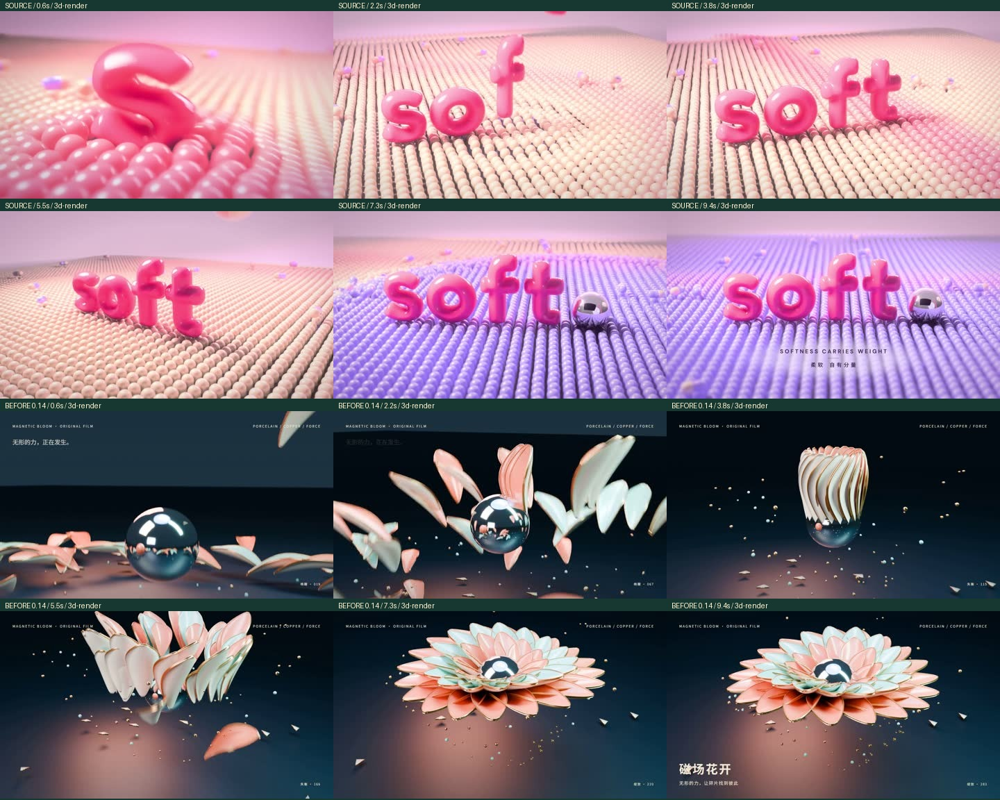
Blender 4.5 Cycles 成片；默认组合使用成片缓存，修改材料和构成后网页为 Three.js 快速预览，服务重新运行 Cycles。磁吸与悬停为确定性编舞，不是电磁场或通用软体物理求解。
PRIORITY / 优先 · CEL-BOIL逐帧手绘
本轮开始时的具体缺口翻滚段整体旋转较多，抓取前后机位跳变，仍缺连续手部接触特写；角色与蒲公英情节固定。
值得保留八套轮廓、吸气压缩、吹气与围巾跟随。
重做或验证方向优先补抓取的连续表演和脚部离地关系；下一支换角色与任务。
观看时判断什么
遮住字幕能读懂犹豫、用力、失重与抓握；一拍二不能成为跳位的理由。
展开源作与修改前的取帧依据
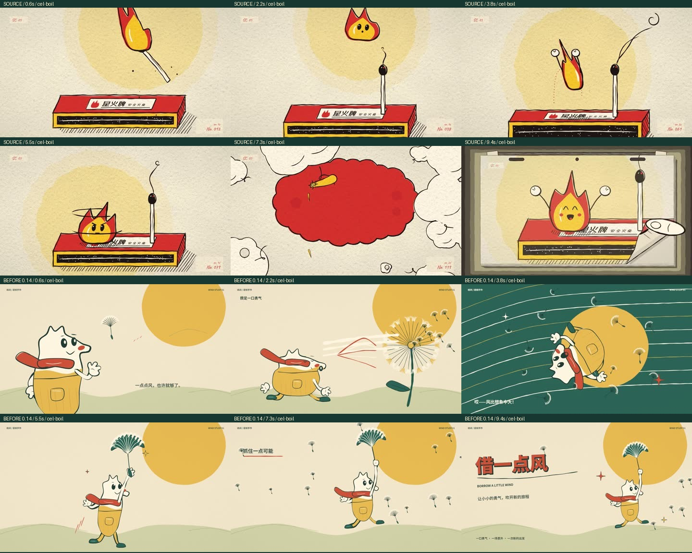
原创 Canvas 手绘角色与十秒分镜，保留 MIT 上游压力笔触和纸纹来源；不是任意角色的自动逐帧生成，也没有真实布料或空气动力学。
REFINE / 精修 · COLLAGE拼贴剪贴
本轮开始时的具体缺口3.8–7.3秒主要是同一纸偶、梯子和水母场景，空间与动作变化有限。
值得保留纸锥打开、折面、白边与纸偶分层。
重做或验证方向让纸偶与另一种纸机关有明确接触和展开结果。
观看时判断什么
纸层厚度、抓梯位置、折页铰链连续；拿掉纸纹仍能看出拼贴结构。
展开源作与修改前的取帧依据
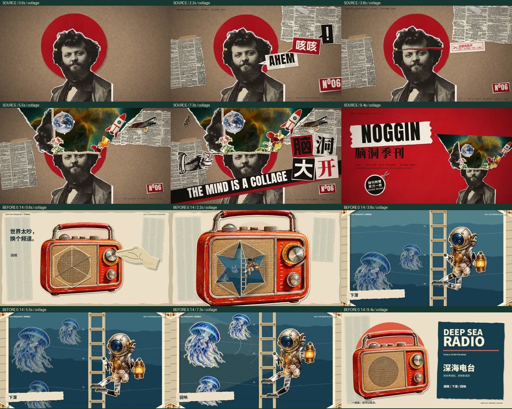
沿用本项目原创海底atlas，在Canvas中做局部裁片与原创纸偶四肢，不生成新PNG；人物是受约束的纸偶编排，不是自由角色表演或真实布料/纸张物理。
REFINE / 精修 · LIQUID液态流动
本轮开始时的具体缺口0.15已补薄膜与断颈，7.3秒后仍主要保持拱膜；材质偏设计凝胶，距离自由流动的液体还有边界。
值得保留开孔、厚边、回缩、卫星滴与低支点。
重做或验证方向验证另一种流动事件与不同厚度，逐帧检查断裂前后。
观看时判断什么
薄膜与厚团同时可读，断裂没有悬浮残段；不把SDF编舞称为流体解算。
展开源作与修改前的取帧依据
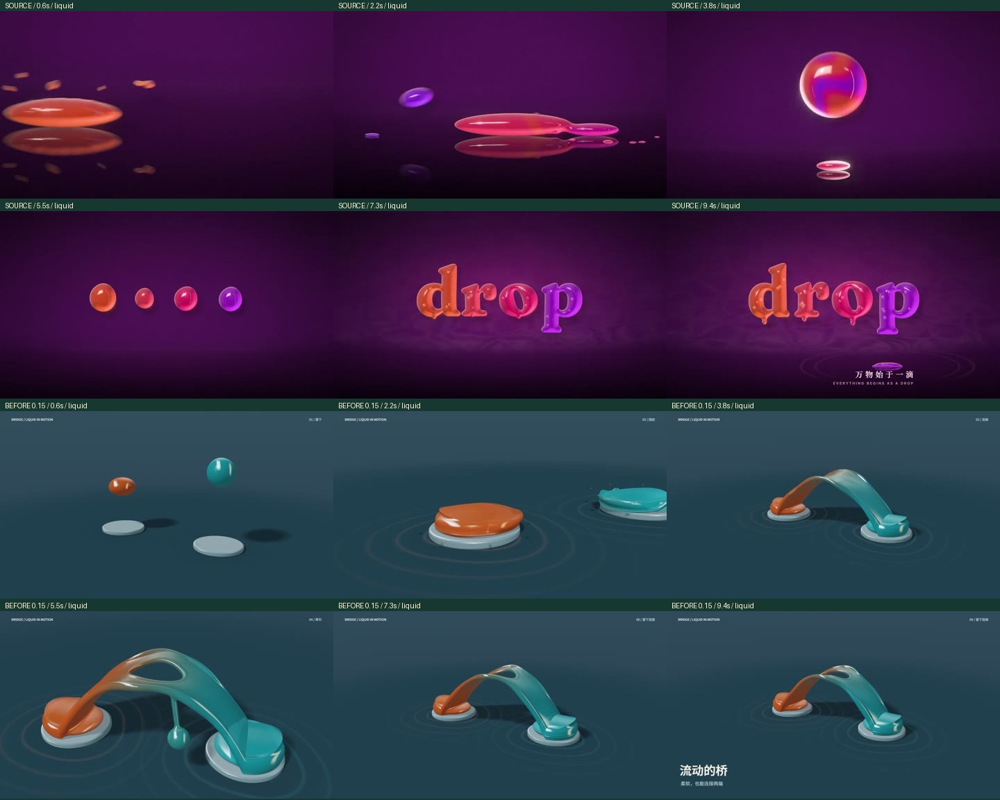
三维SDF确定性形变与近似光学，未使用FLIP、SPH或Navier–Stokes求解，不保证质量守恒；开孔、断颈与回缩由编排曲线控制。
PRIORITY / 优先 · MORPH形变动画
本轮开始时的具体缺口雨伞到气球已连贯，但3.8–5.5秒气球保持偏长，气球到风筝的拉扯与释放还不够鲜明。
值得保留外轮廓、伞骨、吊篮与飘带共同转换。
重做或验证方向缩短无事件保持，设计拉扯、绷紧、释放的中介形，再用不同对象链验证。
观看时判断什么
三个形变中点不打结；部件身份有交接；运动承担转场。
展开源作与修改前的取帧依据
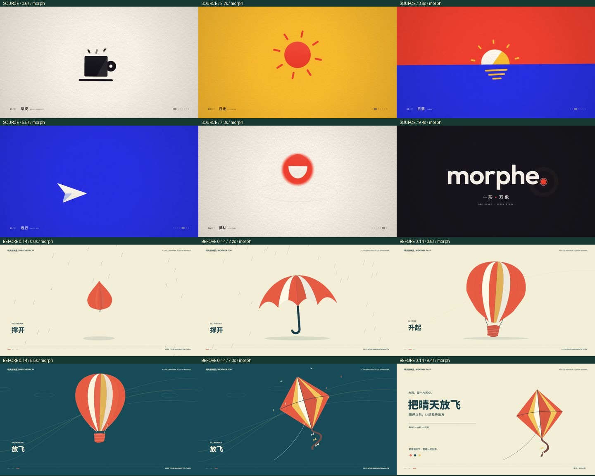
原创Canvas曲线形变短片；轮廓和部件为固定设计及连续点位映射，不是任意SVG拓扑匹配、布料物理解算或生成式连续视频。
REFINE / 精修 · BAUHAUS几何包豪斯
本轮开始时的具体缺口已有较强的几何因果和海报收束，但后段装饰模块的作用仍弱于主轮；换内容仍是同一游乐场。
值得保留黄球、支点、跷板、摩天轮与活动海报。
重做或验证方向验证全新几何关系与非游乐场主题。
观看时判断什么
每次旋转改变可见关系；各物体有自己的重量和停顿。
展开源作与修改前的取帧依据
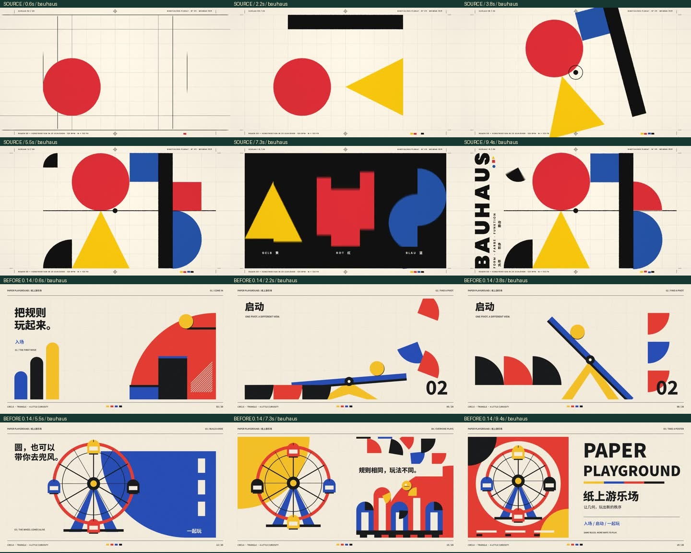
原创二维几何设施与确定性事件时间表，不是机械动力学仿真；没有分析上传音乐的BPM。支持现有文字、配色、密度、动作和细节参数。
REFINE / 精修 · SYNTHWAVE复古霓虹
本轮开始时的具体缺口进出舱已有连续接力，穿越段仍重复同类门框，暗部和小字在小屏上的辨识度可提升。
值得保留磁带实体面、反射、空间穿越、暖色字版。
重做或验证方向设计途中有因果的装置变化及另一种年代媒介。
观看时判断什么
速度由空间尺度体现；进出舱不跳位；字版高潮在小屏可读。
展开源作与修改前的取帧依据
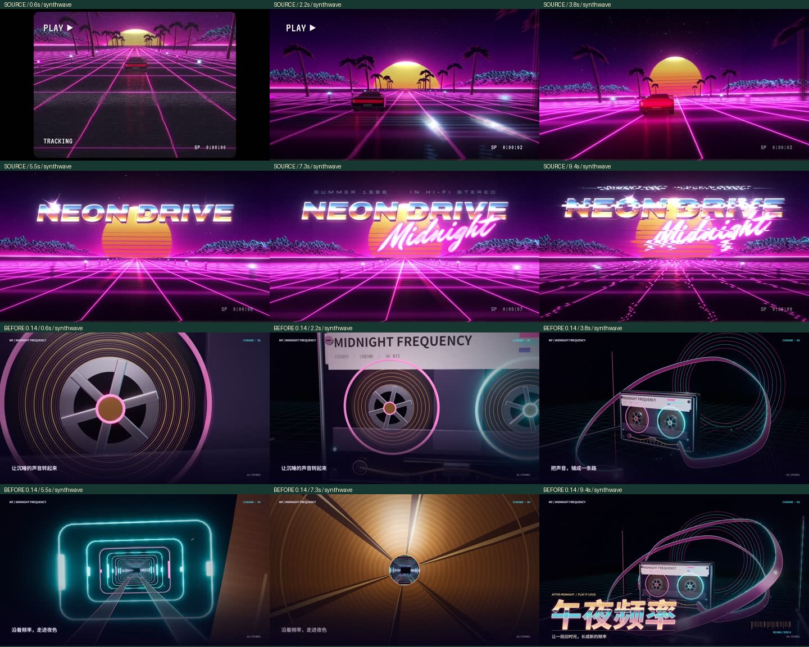
原创Three.js资产与四事件编排。转场用镜头局部三维几何遮挡接续，不等于整座舱与磁带的全局物理连续；未模拟磁带张力或实际音频频谱。
PRIORITY / 优先 · AURORA-GLASS极光玻璃
本轮开始时的具体缺口3.8–9.4秒主要是相同三卡布局与透镜移动，材质存在但内容事件弱，结尾重复标题。
值得保留中文、波形和读数参与真实场景采样折射。
重做或验证方向重写具体产品任务，让卡片内容和空间组织因操作而改变。
观看时判断什么
不是移动透镜掩盖静态界面；前后状态与用户任务能对应。
展开源作与修改前的取帧依据
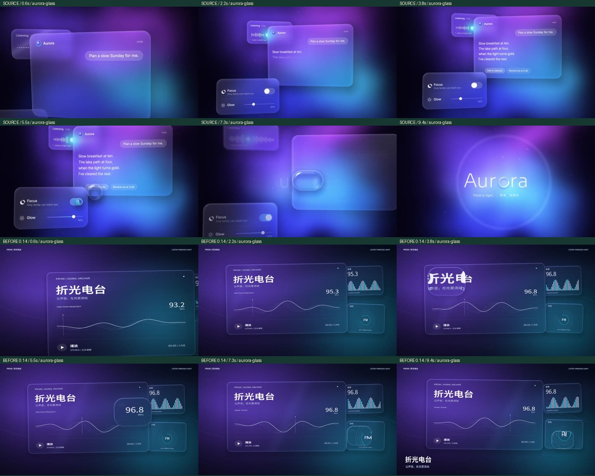
屏幕空间SDF凸透镜与场景纹理采样，不是多次体积反射/透射的路径追踪；磨砂卡片主要采样背景，透镜采样完整已合成场景。波形和频率是确定性原创演示，不是真实音频分析或电台数据。
REFINE / 精修 · HANAZI综艺花字
本轮开始时的具体缺口照片表情与笑点已成立，但演员没有连续动作，笑点主要依靠切图和文字；自由换故事会失去匹配照片。
值得保留事故铺垫、停顿、抠像爆发、营业海报。
重做或验证方向制作有连续动作的授权素材，建立文字避让和逐词时序。
观看时判断什么
画面本身先给出反应；花字不遮挡眼口；新素材能承担笑点。
展开源作与修改前的取帧依据
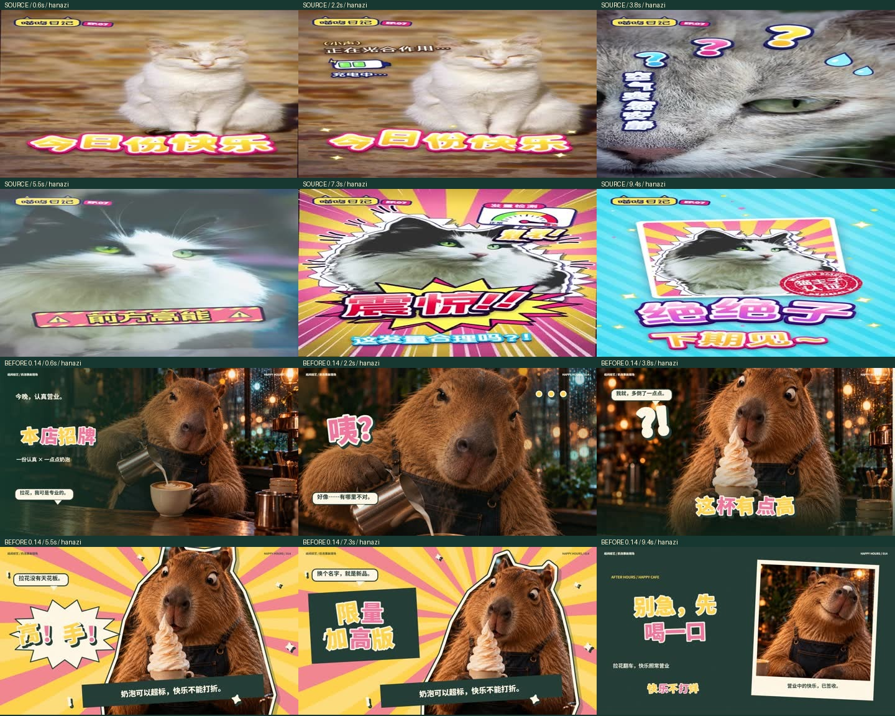
照片蒙太奇与设计轮廓裁切，非连续表演视频。沿用本项目0.12生成照片，不复用源作猫咪、文案或分镜；尚未支持自动抠像、语音识别与自由演员上传。
PRIORITY / 优先 · PAPERCLIP贴纸科普
本轮开始时的具体缺口2.2–3.8秒太阳板与5.5秒电池主要是贴纸加光点，物体内部机制仍靠字幕；更接近产品图片串场。
值得保留提问、连续能量路径与末尾总览的叙述结构。
重做或验证方向本轮用降噪耳罩拆解与同一公式声压叠加重做，再用棱镜分光验证不同机制。
观看时判断什么
关掉字幕仍能看到机制变化；不以装饰粒子代替解释；来源与示意边界可查。
展开源作与修改前的取帧依据
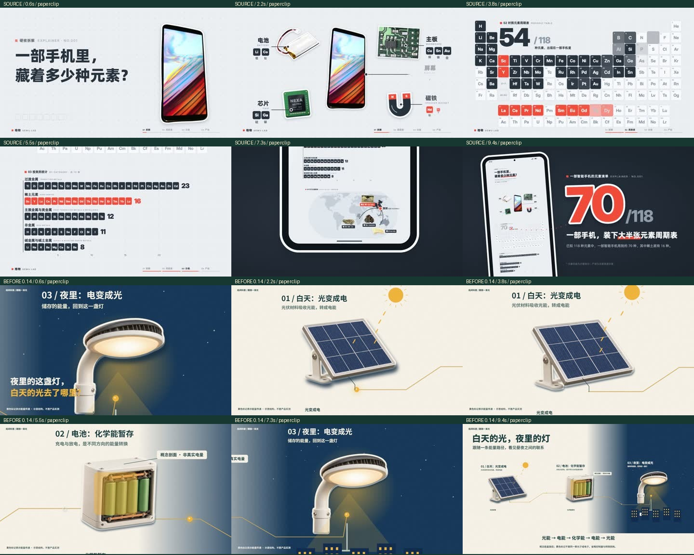
两套固定科普机制；降噪是单频近似，非产品效果预测；棱镜是示意光学，非指定材料光谱。事实来源可查，但没有自动事实核查或自由产品剖面生成。
REFINE / 精修 · PIXEL像素动画
本轮开始时的具体缺口角色已有独立锤击与松气动作，但全片夜景色调和空间较一致，修好后的环境反馈还可更丰富。
值得保留原生像素、接触锤面、月光与角色表演。
重做或验证方向以另一位角色、另一处场景和不同任务验证事件与精灵的复用。
观看时判断什么
锤击有预备、接触和回弹；新故事确实替换精灵、场景与任务。
展开源作与修改前的取帧依据
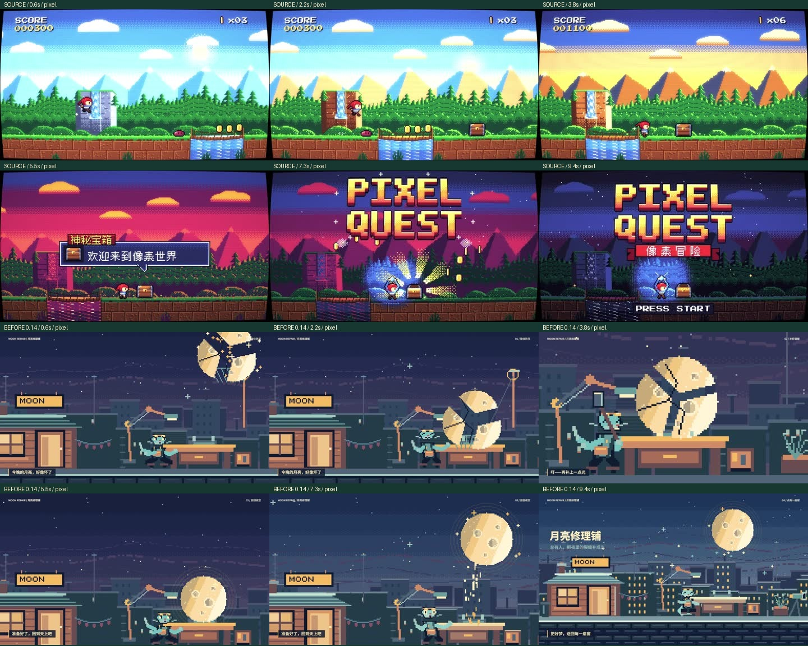
全部美术为本项目代码绘制；月亮与猫为专用资产、动作预编排，未支持任意精灵导入或任意故事生成。像素艺术为低帧率姿态，编辑文字为高分辨率排版层。 AI 可在这套资产的动作范围内编排。
REFINE / 精修 · HUD科技 HUD
本轮开始时的具体缺口0.15已改地形与柔性动作，但小屏仪表文字仍密集；任务局限于固定机械目标的搜索与唤醒。
值得保留未扫描不显形、海沟层次、鳍根到翼尖延迟与尾随。
重做或验证方向减少非关键读数，验证不同目标和任务的观测结构。
观看时判断什么
核心信息与目标动作一致；近景细节和整体轮廓各有清楚时段。
展开源作与修改前的取帧依据
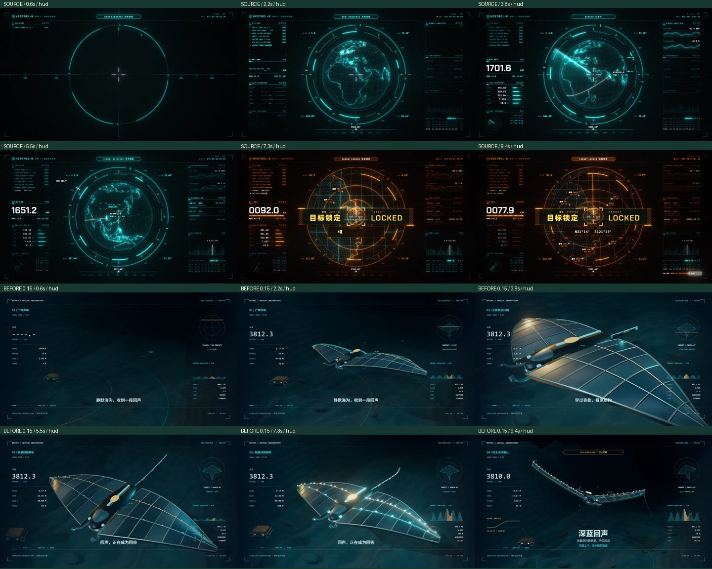
程序机械目标和演示读数，未接入真实传感器。翼面是确定性变形，覆盖比例由翼面采样估计；不含真实水动力或自动新模型生成。